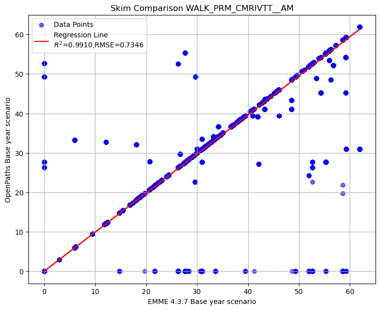

Intercept: 0.0091
Slope: 0.9908
R² Score: 0.9996
RMSE: 0.5400
Scatterplot comparison of AM Peak total actual in-vehicle travel time by walk premium
Intercept: 0.0091
Slope: 0.9908
R² Score: 0.9996
RMSE: 0.5400
Scatterplot comparison of AM Peak actual in-vehicle travel time on LRT mode by walk premium
Intercept: 0.0025
Slope: 0.9997
R² Score: 0.9985
RMSE: 0.4815
Scatterplot comparison of AM Peak actual in-vehicle travel time on commuter rail mode by walk premium
Intercept: -0.0017
Slope: 0.9882
R² Score: 0.9889
RMSE: 0.8146
Scatterplot comparison of AM Peak actual in-vehicle travel time on express bus mode by walk premium
Intercept: 0.0057
Slope: 0.9789
R² Score: 0.9960
RMSE: 0.4163Scatterplot comparison of AM Peak actual in-vehicle travel time on BRT mode by walk premium
Intercept: 0.0206
Slope: 0.9822
R² Score: 0.9953
RMSE: 1.0462
Intercept: 0.0648
Slope: 0.9924
R² Score: 0.9999
RMSE: 0.7963
Intercept: 0.1343
Slope: 0.9922
R² Score: 0.9965
RMSE: 2.8342
To display the top 5 rows of skim comparison (sort by WALK_PRM_TOTALIVTT__AM)
| Origin | Destination | WALK_PRM_TOTALIVTT__AM | WALK_PRM_LRTIVTT__AM | WALK_PRM_CMRIVTT__AM | WALK_PRM_EXPIVTT__AM | WALK_PRM_BRTIVTT__AM | WALK_LOC_TOTALIVTT__AM | WALK_MIX_TOTALIVTT__AM | WALK_PRM_XFERS__AM | WALK_LOC_XFERS__AM | WALK_MIX_XFERS__AM |
|---|---|---|---|---|---|---|---|---|---|---|---|
| 1933 | 112 | 54.86 | 36.61 | -58.57 | 8.96 | 67.86 | -2.05 | -0.02 | 1 | 0 | 0 |
| 3746 | 129 | 53.27 | 41.14 | -52.62 | 0 | 64.75 | -2.45 | -0.01 | 0 | 0 | 0 |
| 1933 | 114 | 52 | 33.76 | -58.57 | 8.96 | 67.86 | -2.05 | -0.01 | 1 | 0 | 0 |
| 1933 | 138 | 52 | 33.76 | -58.57 | 8.96 | 67.86 | -2.04 | 0 | 1 | 0 | 0 |
| 1933 | 131 | 52 | 33.76 | -58.57 | 8.96 | 67.86 | -2.06 | 0 | 1 | 0 | 0 |
Below is the summary of selected matrices difference in transit AM skim
| WALK_PRM_TOTALIVTT__AM | WALK_PRM_LRTIVTT__AM | WALK_PRM_CMRIVTT__AM | WALK_PRM_EXPIVTT__AM | WALK_PRM_BRTIVTT__AM | WALK_LOC_TOTALIVTT__AM | WALK_MIX_TOTALIVTT__AM | WALK_PRM_XFERS__AM | WALK_LOC_XFERS__AM | WALK_MIX_XFERS__AM | |
|---|---|---|---|---|---|---|---|---|---|---|
| count | 24,472,809.00 | 24,472,809.00 | 24,472,809.00 | 24,472,809.00 | 24,472,809.00 | 24,472,809.00 | 24,472,809.00 | 24,472,809.00 | 24,472,809.00 | 24,472,809.00 |
| mean | -0.11 | 0.00 | -0.02 | -0.02 | -0.07 | -0.52 | -0.18 | -0.00 | 0.00 | 0.00 |
| std | 0.60 | 0.48 | 0.82 | 0.44 | 1.08 | 1.02 | 2.86 | 0.02 | 0.04 | 0.07 |
| min | -29.40 | -58.35 | -59.24 | -60.31 | -58.45 | -39.59 | -137.10 | -2.00 | -2.07 | -3.50 |
| 25% | 0.00 | 0.00 | 0.00 | 0.00 | 0.00 | -0.83 | -0.23 | 0.00 | 0.00 | 0.00 |
| 50% | 0.00 | 0.00 | 0.00 | 0.00 | 0.00 | -0.05 | 0.00 | 0.00 | 0.00 | 0.00 |
| 75% | 0.00 | 0.00 | 0.00 | 0.00 | 0.00 | 0.00 | 0.00 | 0.00 | 0.00 | 0.00 |
| max | 54.86 | 53.38 | 49.33 | 81.99 | 72.82 | 48.46 | 152.50 | 2.67 | 2.88 | 3.50 |
Let’s check the records with difference in WALK_PRM_LRTIVTT__AM greater than 50
| Origin | Destination | WALK_PRM_TOTALIVTT__AM | WALK_PRM_LRTIVTT__AM | WALK_PRM_CMRIVTT__AM | WALK_PRM_EXPIVTT__AM | WALK_PRM_BRTIVTT__AM | WALK_LOC_TOTALIVTT__AM | WALK_MIX_TOTALIVTT__AM | WALK_PRM_XFERS__AM | WALK_LOC_XFERS__AM | WALK_MIX_XFERS__AM |
|---|---|---|---|---|---|---|---|---|---|---|---|
| 40 | 2364 | 10 | 53.38 | -59.24 | 0 | 15.85 | -0.95 | 0 | 0 | 0 | 0 |
| 40 | 2398 | 10 | 53.38 | -59.24 | 0 | 15.85 | -0.98 | 0 | 0 | 0 | 0 |
| 40 | 2420 | 10 | 53.38 | -59.24 | 0 | 15.85 | -0.98 | 0 | 0 | 0 | 0 |
| 40 | 2436 | 10 | 53.38 | -59.24 | 0 | 15.85 | -0.99 | 0 | 0 | 0 | 0 |
| 40 | 2526 | 10 | 53.38 | -59.24 | 0 | 15.85 | -0.98 | 0 | 0 | 0 | 0 |
| 43 | 2364 | 10 | 53.38 | -59.24 | 0 | 15.85 | -0.95 | 0 | 0 | 0 | 0 |
| 43 | 2398 | 10 | 53.38 | -59.24 | 0 | 15.85 | -0.98 | 0 | 0 | 0 | 0 |
| 43 | 2420 | 10 | 53.38 | -59.24 | 0 | 15.85 | -0.98 | 0 | 0 | 0 | 0 |
| 43 | 2436 | 10 | 53.38 | -59.24 | 0 | 15.85 | -0.99 | 0 | 0 | 0 | 0 |
| 43 | 2526 | 10 | 53.38 | -59.24 | 0 | 15.85 | -0.98 | 0 | 0 | 0 | 0 |
| 48 | 2364 | 10 | 53.38 | -59.24 | 0 | 15.85 | -0.95 | 0 | 0 | 0 | 0 |
| 48 | 2398 | 10 | 53.38 | -59.24 | 0 | 15.85 | -0.98 | 0 | 0 | 0 | 0 |
| 48 | 2420 | 10 | 53.38 | -59.24 | 0 | 15.85 | -0.98 | 0 | 0 | 0 | 0 |
| 48 | 2436 | 10 | 53.38 | -59.24 | 0 | 15.85 | -0.99 | 0 | 0 | 0 | 0 |
| 48 | 2526 | 10 | 53.38 | -59.24 | 0 | 15.85 | -0.98 | 0 | 0 | 0 | 0 |
| 56 | 2364 | 10 | 53.38 | -59.24 | 0 | 15.85 | -0.95 | 0 | 0 | 0 | 0 |
| 56 | 2398 | 10 | 53.38 | -59.24 | 0 | 15.85 | -0.98 | 0 | 0 | 0 | 0 |
| 56 | 2420 | 10 | 53.38 | -59.24 | 0 | 15.85 | -0.98 | 0 | 0 | 0 | 0 |
| 56 | 2436 | 10 | 53.38 | -59.24 | 0 | 15.85 | -0.99 | 0 | 0 | 0 | 0 |
| 56 | 2526 | 10 | 53.38 | -59.24 | 0 | 15.85 | -0.98 | 0 | 0 | 0 | 0 |
Let’s check the records with difference in WALK_PRM_LRTIVTT__AM less than -50
| Origin | Destination | WALK_PRM_TOTALIVTT__AM | WALK_PRM_LRTIVTT__AM | WALK_PRM_CMRIVTT__AM | WALK_PRM_EXPIVTT__AM | WALK_PRM_BRTIVTT__AM | WALK_LOC_TOTALIVTT__AM | WALK_MIX_TOTALIVTT__AM | WALK_PRM_XFERS__AM | WALK_LOC_XFERS__AM | WALK_MIX_XFERS__AM |
|---|---|---|---|---|---|---|---|---|---|---|---|
| 2627 | 1190 | 2.97 | -51.9 | 0 | 54.87 | 0 | -2.38 | -0.12 | -1.5 | 0 | 0 |
| 2627 | 1199 | 2.97 | -51.9 | 0 | 54.87 | 0 | -2.38 | -0.12 | -1.5 | 0 | 0 |
| 2641 | 1190 | 2.97 | -51.9 | 0 | 54.87 | 0 | -2.34 | 0 | -1.5 | 0 | 0 |
| 2641 | 1199 | 2.97 | -51.9 | 0 | 54.87 | 0 | -2.34 | 0 | -1.5 | 0 | 0 |
| 2650 | 1190 | 2.97 | -51.9 | 0 | 54.87 | 0 | -2.34 | 0 | -1.5 | 0 | 0 |
| 2650 | 1199 | 2.97 | -51.9 | 0 | 54.87 | 0 | -2.34 | 0 | -1.5 | 0 | 0 |
| 2713 | 1190 | 2.97 | -51.9 | 0 | 54.87 | 0 | -2.34 | 0 | -1.5 | 0 | 0 |
| 2713 | 1199 | 2.97 | -51.9 | 0 | 54.87 | 0 | -2.34 | 0 | -1.5 | 0 | 0 |
| 2726 | 1190 | 2.97 | -51.9 | 0 | 54.87 | 0 | -2.34 | -0.12 | -1.5 | 0 | 0 |
| 2726 | 1199 | 2.97 | -51.9 | 0 | 54.87 | 0 | -2.34 | -0.12 | -1.5 | 0 | 0 |
| 2743 | 1190 | 2.97 | -51.9 | 0 | 54.87 | 0 | -2.34 | 0 | -1.5 | 0 | 0 |
| 2743 | 1199 | 2.97 | -51.9 | 0 | 54.87 | 0 | -2.34 | 0 | -1.5 | 0 | 0 |
| 3186 | 1190 | -0.1 | -57.25 | 0 | 57.15 | 0 | -2.37 | 0 | -1.5 | 0 | 0 |
| 3186 | 1199 | -0.1 | -57.25 | 0 | 57.15 | 0 | -2.37 | 0 | -1.5 | 0 | 0 |
| 3186 | 1291 | 0.86 | -54.96 | 0 | 55.81 | 0 | -2.37 | 0 | -1.5 | 0 | 0 |
| 3240 | 1354 | -2.54 | -58.35 | 0 | 55.81 | 0 | -2.2 | 0 | -1.5 | 0 | 0 |